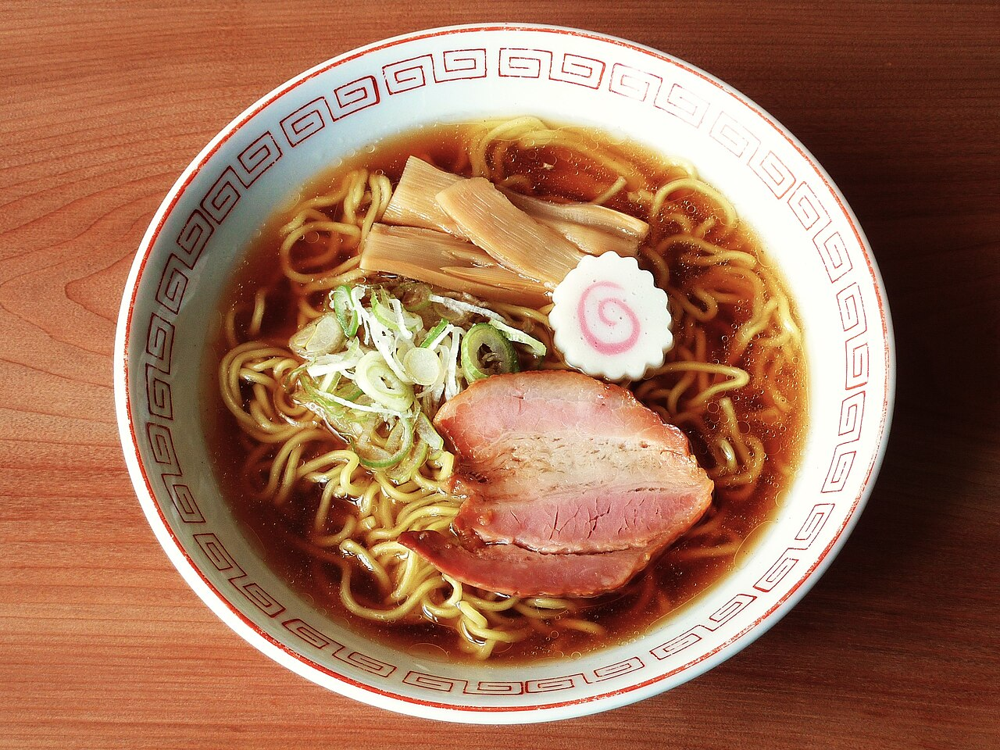

RAMEN GUIDE
京都ラーメン
濃厚系、背脂系、鶏白湯など、京都で楽しめるラーメンの特徴を紹介します。

京都ラーメンの特徴
京都は上品な和食の印象が強い一方、ラーメン文化も発達しています。大学周辺や一乗寺エリアには、多くの専門店があります。
選び方
| あっさり | 醤油や塩ベース。観光途中でも食べやすい。 |
|---|---|
| こってり | 濃厚スープ。満足感を重視する人向け。 |
| 深夜営業 | 営業時間を事前に確認。行列時間にも注意。 |
濃厚系、背脂系、鶏白湯など、京都で楽しめるラーメンの特徴を紹介します。

京都は上品な和食の印象が強い一方、ラーメン文化も発達しています。大学周辺や一乗寺エリアには、多くの専門店があります。
| あっさり | 醤油や塩ベース。観光途中でも食べやすい。 |
|---|---|
| こってり | 濃厚スープ。満足感を重視する人向け。 |
| 深夜営業 | 営業時間を事前に確認。行列時間にも注意。 |